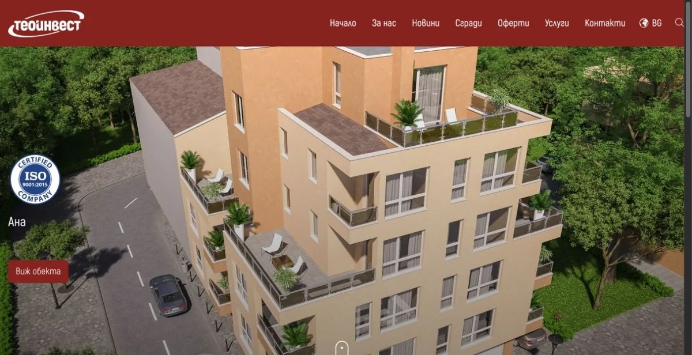

Теоинвест, недвижими имоти
Как купувачите намират „Теоинвест“
+150%
органичен трафик
Отговарях за целия дигитален маркетинг на строителната фирма: SEO, рекламите в Google и Facebook, социалните мрежи и имейл кампаниите.

Дигитален маркетинг
Ако клиентите трудно намират продукта ви или се колебаят преди запитването, разкажете ми къде спира разговорът.



Как помагам
Хората търсят това, което предлагате, но попадат на други.
SEO и SEM · Google Ads · Facebook Ads
Сайтът не отговаря на въпроса, с който са дошли.
Сайт · Съдържание · Имейл и CRM
Има реклами и посещения, но не се вижда кое носи запитвания.
GA4 · Tag Manager · Meta Pixel
Портфолио
Теоинвест, недвижими имоти
+150%
органичен трафик
Отговарях за целия дигитален маркетинг на строителната фирма: SEO, рекламите в Google и Facebook, социалните мрежи и имейл кампаниите.


Creato Solutions, хотелски софтуер
Предложих началната страница да тръгва от работата на рецепцията. След примера идва поканата за персонална демонстрация.
2MENU, разработка и маркетинг
Участвах в разработката и маркетинга на 2MENU. Една поръчка минава през четири стъпки:

Formthotics Bulgaria · Dinamic Comfort · 2025
Хората не търсят „постурология“. Търсят защо ги боли вратът, защо се будят схванати и защо главоболието не минава.
През 2025 г. поддържах социалните мрежи на работилница за ортопедични стелки в Русе, официален представител на Formthotics. Всеки пост тръгваше от болка, която човек вече познава, и спокойно го водеше към причината: стъпалата и стойката. А оттам до прегледа.
Totev Tours · туристическа агенция · 2026
Малка агенция, която води училища, клубове и фирми на път. Собственикът говори лично с всеки клиент, затова рекламата трябваше да звучи като него, а не като каталог.
Започнахме с въпросник. Той отговори със свои думи, а аз пиша по тях.
За мен
Започнах с недвижими имоти във Варна. В разговорите с купувачи се научих да чувам въпроса зад въпроса, преди да предложа решение.
Този опит ми помага и в работата по 2MENU, и в маркетинга на хотелски софтуер. И в двата случая започвам с хората, които ще използват продукта всеки ден.
Следващият проект
Разкажете ми къде спира разговорът.